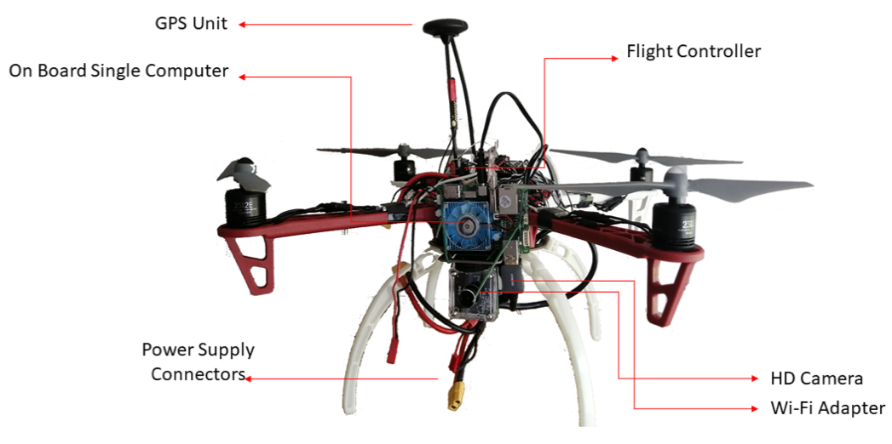

The condition assessment and health monitoring (CAHM) of real assets, is an important task which requires continuous monitoring of the physical properties of the asset to obtain actionable and quantitative information about the asset over time. Traditional CAHM techniques, however, are tedious and depend on manual labour. Moreover, the inspection of unsafe environment can be ineffective and may lead to miss-judgement of the severity of the damage. The use of Unmanned Aerial Vehicles (UAVs), in recent years, as an alternative surveying method has fundamentally revolutionised the way health monitoring and damage assessment for engineering structures are carried out. UAVs, otherwise known as drones, do not require the presence of people around the areas where inspection is taking place. A drone can also be remotely maneuvered very effectively and can be taken to regions that are characterized by difficult accessibility or pose dangerous risks. Owing to these unique capabilities, the automatic drone-based monitoring of structural assets has proven to offer efficient, reliable, and high integrity inspection even in the most challenging diverse environments.
This work is devoted to the development of a deep learning-based drone system suitable for real-time detection of defects in real assets. The drone system is equipped with an on-broad single board computer and a high definition camera. The on-board computer transmits real-time videos captured by the drone camera over a WIFI connection to a GPU-based ground station running a deep-learning neural network for defect detection. This application can offer a practical, effective and low-cost solution for condition assessment procedures of real assets. The obtained results support the feasibility and effectiveness of the approach to identify and classify various types of damages in real-time, using the detection of rust on metal roofs as a problem domain.
The main objective of this research is to develop an autonomous real-time defect detection solution for CAHM of real assets using machine-learning based UAV system. With emphases on performance and cost effectiveness, we adopted the ground-based platform for our application these are significantly less expensive to implement than on-board platforms, and are more suitable for hardware upgrades should more computation power become necessary. Details about the components used to build the Brookes UAV system depicted in Figure 1.
